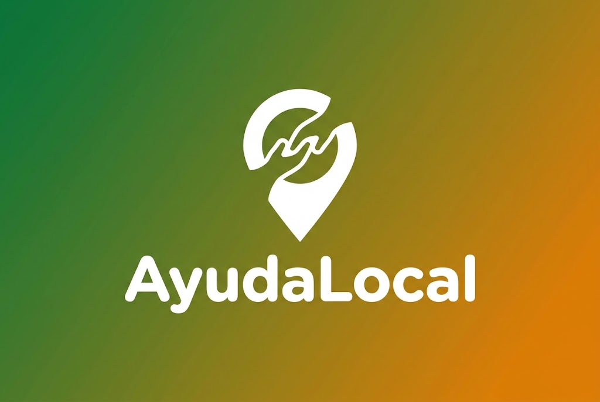

AyudaLocal API Atención de Necesidades de la Comunidad

Backend Architecture | RESTful API & Impacto Social
AyudaLocal es una API para apoyar la atención de necesidades de la comunidad. Los ciudadanos reportan problemas de su barrio, como falta de agua, salud o alimentación, indicando categoría, dirección y prioridad. Las organizaciones sociales reciben los reportes asignados y registran cada seguimiento, de modo que el caso avanza por un ciclo de vida claro (pendiente, asignado, en proceso, resuelto y cerrado) y queda un historial de quién lo atendió y cuándo.
Funcionalidades
Reportes ciudadanos
Los ciudadanos reportan necesidades con categoría, barrio, dirección y prioridad.
Organizaciones sociales
Registro de fundaciones y organizaciones que atienden los reportes por zona.
Asignación de casos
Cada reporte se asigna a una organización y pasa de PENDIENTE a ASIGNADO.
Seguimiento con historial
Cada seguimiento guarda el estado anterior y avanza el caso hasta RESUELTO o CERRADO.
Filtros de búsqueda
Consulta de reportes por estado, categoría, barrio, prioridad, ciudadano u organización.
NestJS + PostgreSQL
Módulos, controladores y servicios en NestJS, entidades TypeORM y PostgreSQL en Docker.
Integrantes